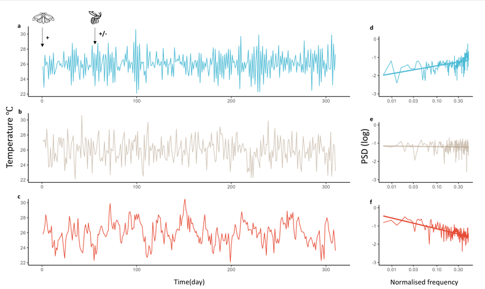
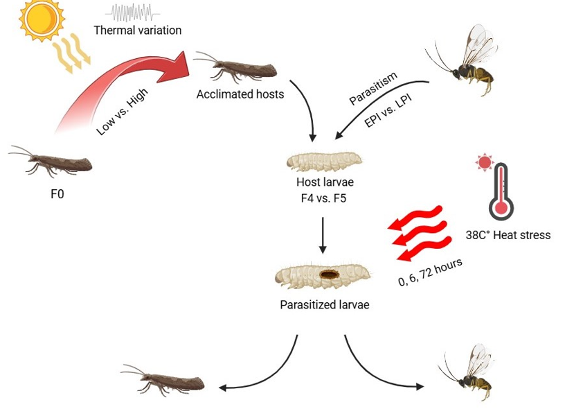
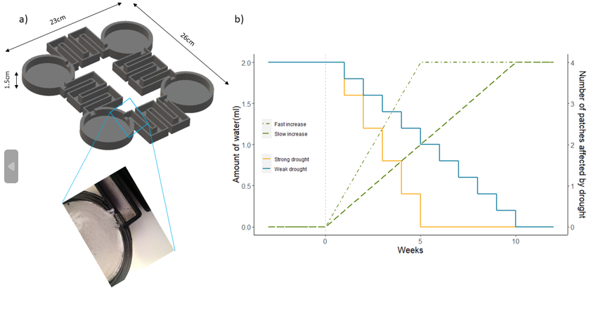
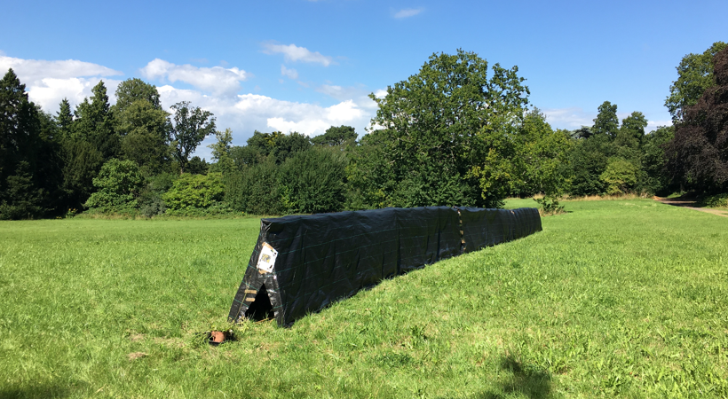

Understanding how environmental change reshapes population dynamics and community stability is central to my research. Using a long-term
1) Environmental change, population dynamics and community stability

2) Life-history selection under multiple stressors
Organisms cope with environmental stress through a range of life-history strategies. One part of my research aims to understand how multiple stressors shape plasticity in life-history traits, within or across generations. Using laboratory life-history experiments with the Indian meal moth Plodia interpunctella and its parasitoid wasp Venturia canescens, I investigated how parasitized and unparasitized hosts respond to combined stressors such as heat stress and humidity across life stages (Li et al. 2024, Ecology & Evolution). Building on this work, I examined how historical thermal adaptation (figure) by host previous generations affects the fitness of parasitoid offspring (li et al. In-prep). By incorporating direct thermal acclimation experiments, I quantified transgenerational and withingenerational effects of thermal resistance and explored how past environmental conditions can carry over to shape host–parasitoid interactions (li et al. In-prep). This research shows that species responses to environmental change depend not only on current muti-stressor conditions, but also on developmental history and cross-generational effects. These findings highlight the importance of life-history complexity in predicting ecological responses to climate change.

3) Corridor-mediated dispersal and metapopulation persistence
Wildlife corridors maintain the connectivity in fragmented landscapes, but the ecological function of corridor quality remains largely understudied. Using small-scale experimental systems containing the soil Collembola Folsomia candida, I investigated how corridor quality interacts with physical properties to affect movement rates and patch colonisation within metapopulations (Li et al. 2021, Oecologia). Using simplified four-patch habitat networks (figure), I examined whether corridors can buffer the negative effects of climate stress on metapopulation extinction risk (Li et al. 2023 Eco & Evo). This work suggests that enhancing habitat quality in corridors can facilitate inter-patch movements and support long-term persistence in fragmented populations.
More broadly, these studies highlight that effective conservation corridors should be designed not only to connect habitat patches, but also to provide suitable conditions for movement. Corridor quality may therefore play a key role in helping species persist under increasing habitat fragmentation and environmental change.

4) Landscape structure and pollination success
Animal-mediated pollination is increasingly disrupted by habitat change. One strand of my research examines how landscape structures shape pollinator communities and the pollination services they provide. In a naturally fragmented landscape in central Bristol, I quantified how patch-scale factors such as habitat size and isolation influenced the pollination success of the English bluebell (Hyacinthoides non-scripta) (Li et al. 2024 PLOS ONE). In the second study, I extended this work to the community level by testing whether linear habitat elements could function as dispersal corridors for pollinators. Using artificial hedgerows (figure), I assessed their effects on pollination success in experimentally assembled plant communities (Li et al. 2026 Oecologia). This research provides evidence that landscape structure influences not only where pollinators occur, but also how effectively they move through fragmented habitats and deliver ecosystem services. These findings highlight the importance of maintaining connectivity and habitat quality when designing landscapes that can sustain biodiversity and resilient pollination systems.
